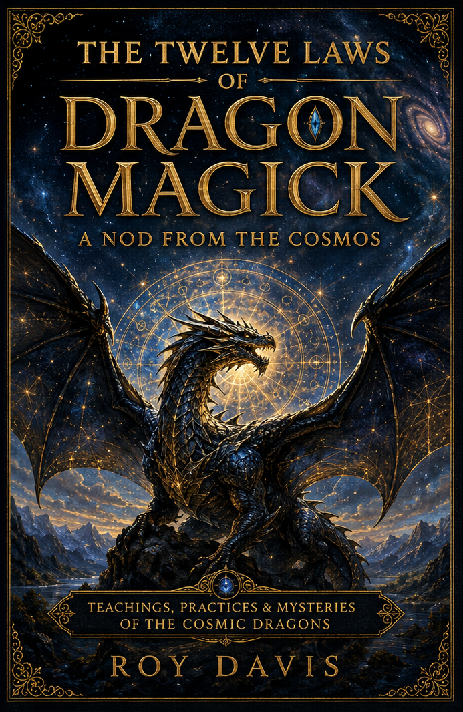
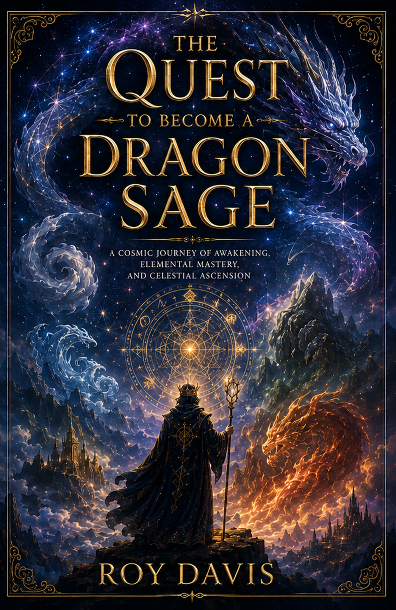
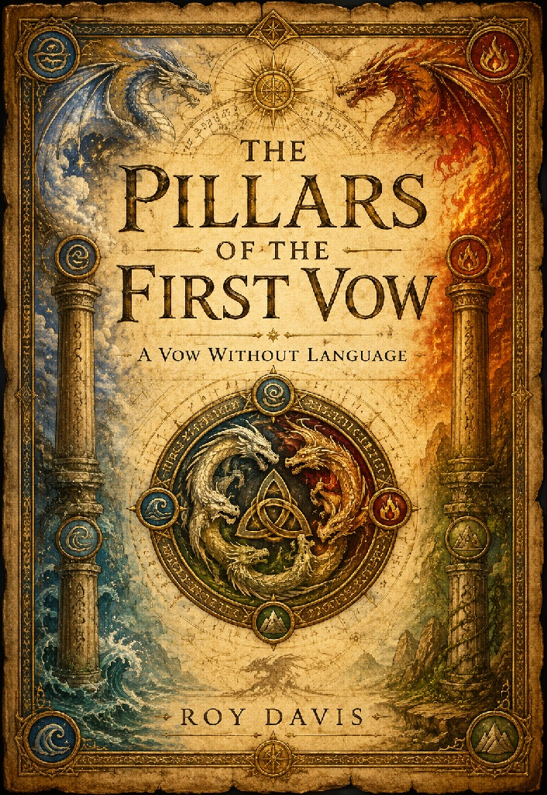
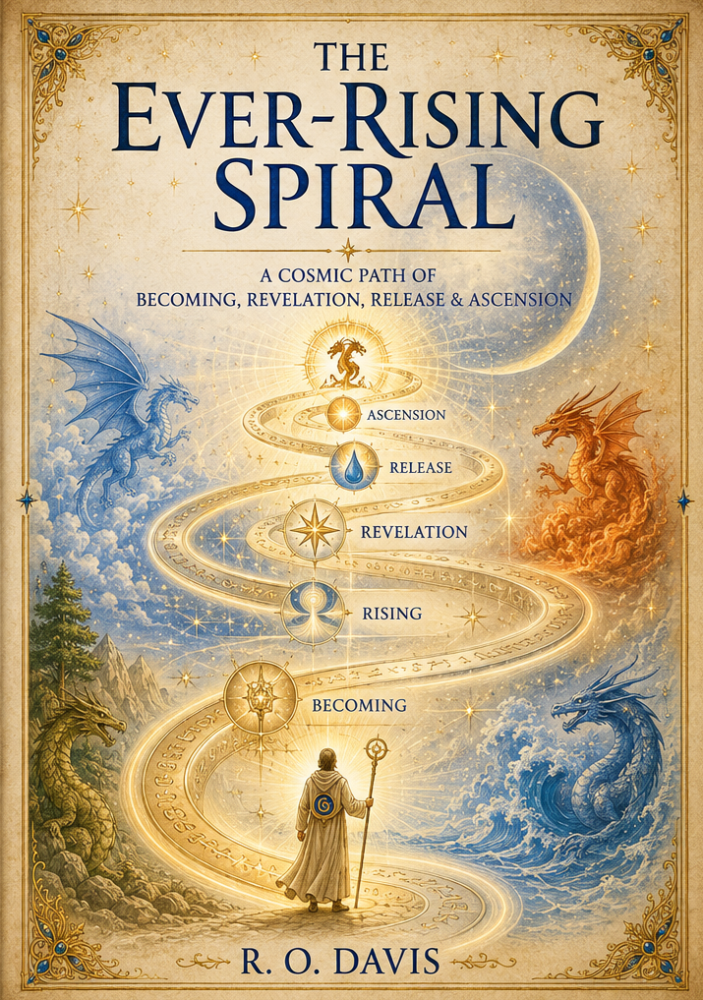
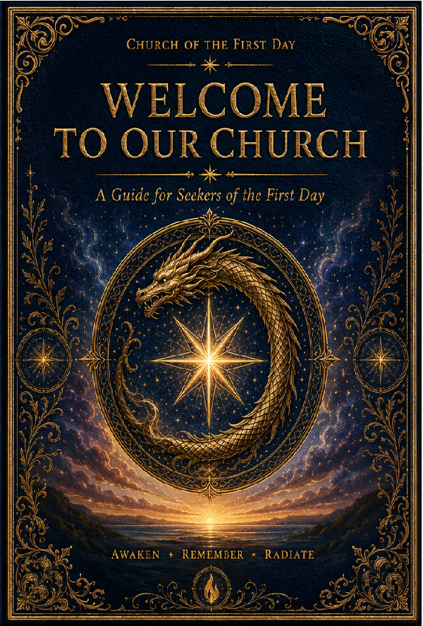

The Twelve Laws of Dragon Magick
A Nod From The Cosmos
The books and writings that form the growing body of the Church of the First Day.
These works form the growing library of the Path. Each approaches the journey from a different doorway—teaching, exploration, foundations, and becoming.

A Nod From The Cosmos

A cosmic journey of awakening, elemental mastery, and celestial ascension.

A Vow Without Language

A cosmic path of becoming, revelation, release & ascension.
The Library also holds works created to help seekers understand the Church itself. Welcome to Our Church serves as a guide for those beginning to explore the First Day.

“A brighter tomorrow begins with a curious today.”